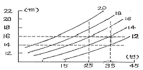
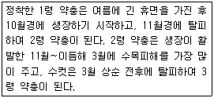
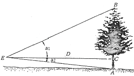
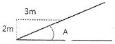

산림기사 (2014-03-02 기출문제)
1과목: 조림학
1. 목본식물의 피자식물에서는 개화를 억제하나 나자식물의 경우는 개화에 긍정적으로 작용하는 것은?
- GA
- IBA
- IAA
- NAA
(정답률: 75%)

2. 숲의 종류를 구분하는데 있어 작업종 또는 생성 기원에 따른 것으로 옳지 않는 것은?
- 교림
- 순림
- 왜림
- 중림
(정답률: 74%)
3. 수목과 건조한 환경에 대한 설명으로 옳지 않은 것은?
- 일반적으로 내건성 수목은 얕고 넓은 근계를 형성한다.
- 내건성이란 건조한 환경에 견딜 수 있는 능력을 말한다.
- 내건성 수종은 주로 소나무, 은행나무, 상수리나무 등이 있다.
- 건조한 지역에서 자라는 수목은 각피층이 두껍고, 증산량이 낮은 경엽을 가지고 있다.
(정답률: 62%)
4. Quercus 속에 속하지 않는 수종은?
- 밤나무
- 신갈나무
- 상수리나무
- 종가시나무
(정답률: 68%)
5. 개화 결실의 주기성이 가장 짧은 수종으로만 짝지어진 것은?
- 느릅나무, 낙우송
- 전나무, 신갈나무
- 단풍나무, 자작나무
- 소나무, 일본잎갈나무
(정답률: 61%)
6. 수목의 증산작용에 대한 설명으로 옳지 않은 것은?
- 잎의 온도를 낮추어 준다.
- 무기염의 흡수와 이동을 촉진시키는 역할을 한다.
- 증산작용을 할 수 없는 100%의 상대습도에서는 식물이 자라지 못한다.
- 식물의 표면으로부터 물이 수증기의 형태로 방출되는 것을 의미한다.
(정답률: 79%)
7. 비료의 농도가 너무 높아 묘목이 말라죽는 경우에서 토양과 묘목의 수분포텐셜(Ψ)의 관계로 옳은 것은?
- Ψ토양 ＞ Ψ묘목
- Ψ토양 = Ψ묘목
- Ψ토양 ＜ Ψ묘목
- Ψ토양 ∝ Ψ묘목
(정답률: 68%)
8. 임업종자에 대한 설명으로 옳지 않은 것은?
- 종자산지(provenance)는 미국의 동부지역이다.
- 발아율이 80% 이고, 순량율이 70% 인 종자의 효율은 56% 이다.
- 옻나무나 아까시나무에 적용할 수 있는 종자의 탈종법은 부숙마찰법이다.
- 강원도에서 얻어진 리기다소나무의 도토리는 밀폐시켜 저장하면 활력이 저하된다.
(정답률: 66%)
9. 개화 - 결실 과정에서 화기의 구조와 종자 또는 열매의 상호 관계를 올바르게 연결한 것은?
- 자방 - 종자
- 배주 - 열매
- 주피 - 종피
- 난핵 - 배유
(정답률: 82%)
10. 다음은 어떤 수종에 대한 지위지수곡선으로서 25년생을 기준 연령으로 한 것이다. 35년생으로 우세목의 평균 수고가 16m 라면 지위지수의 추정치는?

- 12
- 14
- 16
- 18
(정답률: 76%)
11. 제벌에 대해 바르게 설명하고 있는 내용은?
- 중간 수입을 주목적으로 하는 벌채작업이다.
- 작업의 효율성을 고려하여 겨울철에 실시하는 것이 원칙이다.
- 윤벌기 내에 가지치기와 병행하여 단 1회만 실시하는 것이 원칙이다.
- 조림목에 있어서 불량목을 제거하여 임목의 생장과 형질을 향상시키는 작업이다.
(정답률: 81%)
12. 도태간벌에서 미래목 선정시 고려사항이 아닌 것은?
- 수령
- 수목사회적 위치
- 형질
- 생육상태의 건전성
(정답률: 62%)
13. 우리나라의 소나무 중에서 줄기가 곧고, 수관이 가늘고 좁으며 지하고가 높은 특성을 보이는 지역형은?
- 안강형
- 위봉형
- 금강형
- 중남부평지형
(정답률: 87%)
14. 모수작업에 의한 갱신이 상대적으로 유리한 수종은?
- 소나무
- 잣나무
- 호두나무
- 상수리나무
(정답률: 82%)
15. 잎의 밑모양이 이저(耳底)인 수종은?
- 갈참나무
- 졸참나무
- 신갈나무
- 상수리나무
(정답률: 69%)
16. 차가운 물에 침수 처리하여 발아촉진하는 종자의 수종은?
- 옻나무
- 삼나무
- 주엽나무
- 아까시나무
(정답률: 66%)
17. 다음 조건으로 파종량을 계산하면 약 몇 kg 인가? (단, 파종상 면적 500m2, 순량율 90%, 발아율 60%, 실중 500g, 남겨둘 묘목본수 400/m2, 묘목잔존율 80%)
- 131 kg
- 231 kg
- 331 kg
- 431 kg
(정답률: 61%)
18. 접목을 할 때 접수와 대목 수종(접수-대목)이 옳지 않은 것은?
- 소나무 - 곰솔
- 밤나무 - 밤나무
- 호두나무 - 가래나무
- 은행나무 - 비자나무
(정답률: 71%)
19. 천연림보육에 대한 설명으로 옳지 않은 것은?
- 하층임분은 특별한 이유가 없는 한 그대로 둔다.
- 미래목은 장차 미래에 효용가치가 실생목보다 맹아목을 우선적으로 고려하여 선정하는 것이 좋다.
- 세력이 너무 왕성한 보호목은 가지를 제거하여 그 세력을 줄이고 미래목의 생장에 영향이 없도록 한다.
- 상층목의 생육공간을 확보해주기 위하여 수관경쟁을 하고 있는 불량형질목과 가치가 낮은 임목은 제거한다.
(정답률: 86%)
20. 묘포 조성 작업의 순서로 옳은 것은?
- 밭갈이 → 쇄토 → 작상
- 밭갈이 → 작상 → 쇄토
- 작상 → 밭갈이 → 쇄토
- 작상 → 쇄토 → 밭갈이
(정답률: 74%)
2과목: 산림보호학
21. 모닥불 자리나 산불 발생지에서 많이 발생하는 수병으로 옳은 것은?
- 모잘록병
- 뿌리혹병
- 피목가지마름병
- 리지나뿌리썩음병
(정답률: 87%)
22. 녹병균의 포자형으로 옳지 않은 것은?
- 겨울포자
- 여름포자
- 분생포자
- 담자포자
(정답률: 67%)
23. 보르도액에 대한 설명으로 옳지 않은 것은?
- 보호살균제이다.
- 황산동액에 석회유를 부어서 조제한다.
- 1차 전염 일주일 전에 살포하면 효과적이다.
- 수목의 흰가루병, 토양전염성 병원균에는 효과가 없다.
(정답률: 63%)
24. 병원체가 지니고 있는 병원성에 대한 설명으로 옳지 않은 것은?
- 흰가루병균과 녹병균은 절대기생체이다.
- 바이러스나 파이토플라스마는 부생체이다.
- 식물조직의 죽은 유기물을 영양원으로 하여 살아가는 것을 부생체라 한다.
- 인공배양이 불가능하며 살아있는 기주조직 내에서만 증식하는 것을 절대기생체라 한다.
(정답률: 60%)
25. 솔잎혹파리에 대한 설명으로 옳지 않은 것은?
- 유충형태로 토양에서 월동한다.
- 일본에서 최초로 발견된 해충이다.
- 침엽기부에 혹을 만들고 피해를 준다.
- 성충은 5월 하순과 8월 중순 2회 발생한다.
(정답률: 74%)
26. 뿌리혹병에 대한 설명으로 옳은 것은?
- 세균병으로 활엽수류를 주로 침해한다.
- 세균병으로 침엽수류를 주로 침해한다.
- 바이러스로 활엽수류를 주로 침해한다.
- 바이러스로 침엽수류를 주로 침해한다.
(정답률: 61%)
27. 유충시기에 군서하지 않는 해충은?
- 매미나방
- 텐트나방
- 미국흰불나방
- 어스렝이나방
(정답률: 48%)
28. 다음 중 곤충의 피부구조에서 가장 바깥에 위치하는 조직은?
- 기저막
- 내원표피
- 외원표피
- 진피세포
(정답률: 67%)
29. 내염성 수종으로 옳지 않은 것은?
- 곰솔
- 향나무
- 전나무
- 사철나무
(정답률: 66%)
30. 일반적으로 액체보다 가루약을 주입하며 살균제나 살충제보다 영양제 및 미량원소를 주입하는데 가장 좋은 수간 주사 방법은?
- 중력식
- 흡수식
- 삽입식
- 미세압력식
(정답률: 61%)
31. 청설모의 생태에 관한 설명으로 옳지 않은 것은?
- 숲 내의 땅 속에 집을 짓고 산다.
- 4~6월에 3~4마리의 새끼를 낳는다.
- 먹이는 잣, 밤, 호두, 도토리 등이다.
- 땅을 파고 먹이를 저장하는 습성이 있다.
(정답률: 71%)
32. 수목에 충영을 형성하는 해충으로 옳은 것은?
- 텐트나방
- 밤나무혹벌
- 솔수염하늘소
- 느티나무벼룩바구미
(정답률: 73%)
33. 담자균류에 의한 수목병으로 옳지 않은 것은?
- 소나무 혹병
- 전나무 잎녹병
- 잣나무 털녹병
- 낙엽송 잎떨림병
(정답률: 60%)
34. 미국흰불나방은 1년에 몇 회 우화하는가?
- 1회
- 2회
- 4회
- 6회
(정답률: 79%)
35. 졸참나무를 중간기주로 하는 수병은?
- 소나무 혹병
- 소나무 잎녹병
- 잣나무 털녹병
- 배나무 붉은별무늬병
(정답률: 61%)
36. 산림곤충 표본조사법 중 곤충의 음성 주지성(높은 곳으로 기어가는 습성)을 이용한 방법은?
- 미끼트랩
- 수반트랩
- 페로몬트랩
- 말레이즈트랩
(정답률: 79%)
37. 유충과 성충이 모두 나무의 잎을 가해하는 해충은?
- 솔나방
- 잣나무넓적잎벌
- 어스렝이나방
- 오리나무잎벌레
(정답률: 83%)
38. 온실효과를 발생하는 주요 가스로 옳지 않은 것은?
- 메탄
- 산소
- 수증
- 아산화질소
(정답률: 79%)
39. 아래 보기에서 설명하는 산림해충은?

- 솔껍질깍지벌레
- 호두나무잎벌레
- 참나무재주나방
- 도토리거위버레
(정답률: 79%)
40. 야생동물의 서식에 필수 구성요소로 옳지 않은 것은?
- 물
- 먹이
- 온도
- 은신처
(정답률: 76%)
3과목: 임업경영학
41. 임업경영의 지도원칙 중에서 자연보호와 보건휴양을 중요시하는 것은?
- 생산성의 원칙
- 보속성의 원칙
- 수익성의 원칙
- 환경보전의 원칙
(정답률: 77%)
42. 임업원가관리에서 원가에 대한 설명으로 옳지 않은 것은?
- 제품의 생산수준에 따라 비례하는 원가를 변동원가라 한다.
- 특정 제품의 생산만을 위해서 발생한 원가를 직접원가라 한다.
- 과거에 이미 현금을 지불하였거나 부채가 발생한 원가를 매물원가라 한다.
- 어떤 생산수준에서 제품의 여러 단위를 더 생산할 때 추가로 발생하는 원가를 한계원가라 한다.
(정답률: 68%)
43. 임업의 기술적 특성으로 옳지 않은 것은?
- 임업생산이 집약적이다.
- 생산기간이 대단히 길다.
- 임목의 성숙기가 일정하지 않다.
- 자연조건의 영향을 많이 받는다.
(정답률: 54%)
44. 미처분 임산물은 임업경영 자산 중 어디에 속하는가?
- 부채
- 임목자산
- 유동자산
- 고정자산
(정답률: 73%)
45. 대학 학술림에서 임도 개설을 위하여 3000 만원을 투자하여 굴삭기를 구입하였는데 이 굴삭기의 수명은 5년이고, 폐기 이후의 잔존가치는 없다고 한다. 이 투자에 의하여 5년 동안 해마다 720 만원의 순이익을 얻을 수 있다면 이 사업의 투자이익률은 멸 % 인가?
- 36%
- 48%
- 64%
- 72%
(정답률: 60%)
46. 휴양림 마케팅 전략에서 판매촉진 방법 중 가장 효과가 느린 것은?
- 광고
- 특별판매 촉진
- 개인적인 접촉
- 신문 등에 기사화
(정답률: 85%)
47. 앞으로도 수년간 수확이 정기적으로 예상되는 밤나무 임분의 평가는 어떤 방법으로 이루어져야 하는가?
- 대용법
- 입지법
- 기망가법
- 임지비용가
(정답률: 78%)
48. 산림수확조절법 중에서 윤벌기를 계산인자로 사용할 필요가 없는 것은?
- 조사법
- Mantel법
- 임분경제법
- 재적평분법
(정답률: 62%)
49. 산림경영계획의 운용과정을 순서대로 바르게 나타낸 것은?
- 경영계획 - 연차계획 - 사업실행 - 사업예정 - 조사업무
- 경영계획 - 연차계획 - 사업예정 - 사업실행 - 조사업무
- 경영계획 - 연차계획 - 사업예정 - 조사업무 - 사업실행
- 경영계획 - 연차계획 - 조사업무 - 사업예정 - 사업실행
(정답률: 43%)
50. 일반적으로 국내 산림소유 구분 중 면적 비율이 가장 높은 것은?
- 공유림
- 사유림
- 요존 국유림
- 불요존 국유림
(정답률: 82%)
51. 산림지리정보시스템의 구성 요소인 벡터 자료와 래스터 자료의 특성에 대한 설명으로 옳지 않은 것은?
- 래스터 자료는 연산이 빠르다.
- 벡터 자료는 섬세한 묘사가 가능하다.
- 래스터 자료는 선이나 점의 표현이 부정확하다.
- 벡터 자료는 화소 단위의 자료와 연계성이 높다.
(정답률: 58%)
52. 흉고직경 26cm, 수고 20m인 잣나무의 재적을 형수법으로 계산하면 얼마인가?(단, 형수는 0.4544이다.)
- 약 0.121m3
- 약 0.482m3
- 약 0.642m3
- 약 0.964m3
(정답률: 67%)
53. 순토측고기를 사용하여 임목의 수고를 측정할 때 올바른 측정계산법은?

- (tan a1+tan a2)× D
- (cos a1+tan a2)× D× 100
- (cos a1+cos a2)× D
- (tan a1+tan a2)× D× 100
(정답률: 67%)
54. 생림 중심의 자연휴양림의 관리방법으로 옳은 것은?
- 여름철 산책공간으로 교목림으로 육성한다.
- 출입제한 등의 이용규제가 없어도 높은 자연성을 유지할 수 있다.
- 이용밀도가 가장 높은 공간이므로 답압에 의한 영향을 고려해야 한다.
- 인위적 관리를 통해 수목은 적게 하고 잔디 및 초지가 주가 되도록 한다.
(정답률: 65%)
55. 중간 영림의 임목 평가에 적용하는 Glaser식에 대한 설명으로 옳은 것은?
- 임목 매매가법과 임목비용가법을 절충한 식이다.
- 임목 매매가법과 임목기망가법을 절충한 식이다.
- 임목 비용가법과 임목기망가법을 절충한 식이다.
- 예상이익을 현재가치로 환산하여 임목의 가치를 구하는 방법이다.
(정답률: 80%)
56. 사유림의 경영주체가 아닌 것은?
- 회사
- 개인
- 종교단체
- 지방자치단체
(정답률: 83%)
57. 내용연수가 50년인 대학 학술림 관리소 건물의 장부원가는 5000만원이고, 폐기할 때의 잔존가치가 1000만원인 경우 정액법에 의한 이 건물의 연간 감가상각비는?
- 60 만원
- 80 만원
- 100 만원
- 120 만원
(정답률: 82%)
58. 산림경영계획에서 1-2-3-1로 표시된 산림구획이 의미하는 것은?
- 1 임반 2 보조임반 3 소반 1 보조소반
- 1 임반 2 소반 3 보조임반 1 보조소반
- 1 경영계획구 2 임반 3 소반 1 보조소반
- 1 경영계획구 2 임반 3 보조임반 1 소반
(정답률: 78%)
59. 임목의 연년생장량과 평균생장량간의 관계를 바르게 설명한 것은?
- 초기에는 연년생장량이 평균생장량보다 작다.
- 연년생장량이 평균생장량보다 최대점에 늦게 도달 한다.
- 평균생장량이 최대가 될 때 연년생장량과 평균생장량은 같게 된다.
- 평균생장량이 최대점에 이르기까지는 연년생장량이 평균생장량보다 항상 작다.
(정답률: 84%)
60. 다음 중 휴양의 특성과 가장 거리가 먼 것은?
- 자유로운 선택이어야 한다.
- 노동과 관련이 없어야 한다.
- 학습의 효과가 있어야 한다.
- 재충전의 편익이 있어야 한다.
(정답률: 78%)
4과목: 임도공학
61. 어떤 산림에 임도를 설계하고자 할 때 가장 먼저 해야 할 사항으로 옳은 것은?
- 예측
- 답사
- 예비조사
- 설계서 작성
(정답률: 82%)
62. A점의 좌표가 (203.08. 203.15)이고, 측선 AB의 길이가 125m일 때, B점의 좌표는? (단, 단위는 m, 측선 AB의 방위는 S35° 36' 01" E이다.)
- (101.44, 275.92)
- (304.72, 275.92)
- (101.44, 130.38)
- (304.72, 130.38)
(정답률: 27%)
63. 임도 보수 관리 책임자는 임도노면 및 시설물을 연간 몇 회 이상 점검하도록 되어 있는가?
- 1회 이상
- 2회 이상
- 3회 이상
- 4회 이상
(정답률: 78%)
64. 임도설계에서 실시하는 측량방법으로 옳지 않은 것은?
- 예측은 선정된 노선을 현지에 설정하여 정밀 측량을 실시하는 것이다.
- 종단측량은 레벨과 표척을 사용하여 중심선의 고저 기복을 측량하는 작업이다.
- 횡단측량은 중심말뚝마다 중심선과 직각방향으로 지형의 고저기복 상태를 측정한다.
- 평면측량은 교각점에서는 교각을 따라 곡선을 설정하고 곡선시종점 등의 곡선말뚝을 현지에 설정한다.
(정답률: 67%)
65. 임도상에 설치하는 대피소 유효길이의 규정값으로 옳은 것은?
- 5m 이상
- 10m 이상
- 15m 이상
- 20m 이상
(정답률: 79%)
66. 아래 그림에서 경사도의 표식과 물매값으로 옳은 것은?(오류 신고가 접수된 문제입니다. 반드시 정답과 해설을 확인하시기 바랍니다.)

- 2:3 과 67%
- 2:3 과 150%
- 1:1.5 과 67%
- 1:1.5 150%
(정답률: 50%)
67. 고저측량의 기고식 야장기입법에서 지반고를 구하는 식으로 옳은 것은?
- 기계고(I.H) + 후시(B.S)
- 기계고(I.H) - 후시(B.S)
- 기계고(I.H) - 전시(F.S)
- 기계고(I.H) + 전시(F.S)
(정답률: 73%)
68. 길어깨 및 옆도랑의 최소너비 기준으로 옳은 것은?
- 20 cm
- 30 cm
- 40 cm
- 50 cm
(정답률: 52%)
69. 예산내역서에 대한 설명으로 옳은 것은?
- 공정별로 집계표를 작성하고 누계하여 적용한다.
- 당해 공사의 목적, 기준, 시공후 기여도 등을 상세히 기록한다.
- 일반적인 과업지시사항과 공사목적 및 현지의 입지 조건 등을 수록한다.
- 공정별 수량계산서에 의한 공종별 수량과 단가산출서에 의한 공종별 단가를 곱하여 작성한다.
(정답률: 75%)
70. 임도작업시 토목기계 사용의 장점으로 옳지 않은 것은?
- 기계 구입비, 유지비가 저렴하다.
- 규모가 큰 공사라도 공사기간을 단축할 수 있다.
- 인력으로 곤란한 공사라도 무난히 완공할 수 있다.
- 공사비를 절감할 수 있고 시공효율을 높일 수 있다.
(정답률: 81%)
71. 평면곡선에서 중심각은 60°, 곡선반지름이 20m 일 때 안전시거는 약 얼마인가?
- 18m
- 21m
- 28m
- 31m
(정답률: 52%)
72. 임도 노면 시공방법으로 머캐덤(Macadam)이라고도 불리는 것은?
- 사리도
- 토사도
- 쇄석도
- 통나무길
(정답률: 78%)
73. 노체의 기본구조를 깊은 순서대로 나열한 것으로 옳은 것은?
- 노상 → 노반 → 기층 → 표층
- 노상 → 기층 → 노반 → 표층
- 노상 → 기층 → 표층 → 노반
- 노상 → 표층 → 기층 → 노반
(정답률: 84%)
74. 다음 중 가선집재의 장점이 아닌 것은?
- 임지와 입목의 피해가 적다.
- 지형조건의 영향을 덜 받는다.
- 낮은 임도밀도에서도 작업이 가능하다.
- 장비의 가격이 저렴하고, 숙련된 기술을 요하지 않는다.
(정답률: 75%)
75. 가공본줄을 이용한 가선집재방식으로 옳지 않은 것은?
- 스너빙식
- 폴링블록식
- 호이스티캐리지식
- 런닝스카이라인식
(정답률: 52%)
76. 모터그레이더를 사용 목적에 의하여 분류한 것으로 가장 옳은 것은?
- 전압기계
- 굴착기계
- 운반기계
- 정지기계
(정답률: 78%)
77. 축척 1/500 도면 1매의 면적이 10000m2이다. 만약 그 도면의 축척을 1/1000로 했다면 이 도면 1매의 면적은 얼마인가?
- 20000m2
- 40000m2
- 80000m2
- 10000m2
(정답률: 64%)
78. 임도의 설계시 구분되는 암(岩 )의 종류로 옳지 않은 것은?
- 경암
- 연암
- 준경암
- 최강암
(정답률: 82%)
79. 임도의 시공사면에 석축용벽을 설치할 때 석재의 종류와 시공방법에 대한 설명으로 옳지 않은 것은?
- 견치돌은 메쌓기와 찰쌓기에 모두 이용 가능하다.
- 막깬돌은 반드시 메쌓기용으로 시공해야 튼튼하다.
- 야면석은 자연석으로 무게 약 100 kg정도로 찰쌓기와 메쌓기에 사용된다.
- 마름돌은 고급석재이므로 미관을 요하는 경우의 메쌓기나 찰쌓기로 이용된다.
(정답률: 64%)
80. 다음의 산림토목 시공용 기계 중 주로 굴착작업에 사용되는 기계는?
- 래머
- 탬팡롤러
- 파워셔블
- 모터그레이더
(정답률: 73%)
5과목: 사방공학
81. 녹화파종공법을 시행할 때 파종량의 산출에 대하여 바르게 설명한 것은?
- 파종량의 결정은 발아율과 비례관계에 있다.
- 파종량의 결정은 순량율과 비례관계에 있다.
- 파종량의 결정은 평균입수와 비례관계에 있다.
- 파종량의 결정은 발생기대본수와 비례관계에 있다.
(정답률: 68%)
82. 계간수로의 횡단면산정법에서 가장 유리한 사다리꼴 횡단면일 경우 다음 중 옳은 것은?(단, 수로의 밑너비 b, 깊이 t, 측사각 ø )
- b=t tanø /2
- b=2t tanø /2
- b=t tanø
- b=2t tanø
(정답률: 62%)
83. 붕괴 현황조사에서 중요시하는 붕괴의 3요소에 해당되지 않는 것은?
- 붕괴 위치
- 붕괴 면적
- 붕괴 평균 깊이
- 붕괴 평균 경사각
(정답률: 63%)
84. 지표면 유출현상이 계속적으로 일어나 소규모의 물줄기에 의한 흐름 때문에 생기는 토사이동현상으로 옳은 것은?
- 구곡침식
- 면상침식
- 우적침식
- 누구침식
(정답률: 61%)
85. 폐탄광지 복구를 위한 공법으로 부적합한 것은?
- 바자얽기
- 돌조공법
- 산비탈돌쌓기
- 기슭막이공법
(정답률: 60%)
86. 비탈면 안정 평가를 위해 안전율을 계산하는 방법으로 옳은 것은?
- 비탈의 활동면에 대한 흙의 압축응력을 현재의 전단강도로 나눈 값
- 비탈의 활동면에 대한 흙의 전단응력을 현재의 전단강도로 나눈 값
- 비탈의 활동면에 대해 흙의 압축강도를 현재의 압축응력으로 나눈 값 .
- 비탈의 활동면에 대한 흙의 전단강도를 현재의 전단응력으로 나눈 값
(정답률: 65%)
87. 유연면적이 10000m2이고, 최대시우량이 150mm/hr 일 때 임상이 좋은 산림지역에서의 유량은 약 얼마인가?(단, 유거계수는 0.35 이다.)
- 0.146 m3/sec
- 1.458 m3/sec
- 14.58 m3/sec
- 145.8 m3/sec
(정답률: 54%)
88. 암석을 깎아낸 암반 비탈면에 3열로 수목을 식재하여 차폐효과를 얻고자 할 때 가장 적당한 방법은?
- 중앙에 침엽수를 1열로 식재하고, 그 앞뒤에 활엽교목, 관목을 식재한다.
- 중앙에 활엽교목을 1열로 식재하고, 그 앞뒤에 침엽수, 관목을 식재한다.
- 중앙에 관목을 2열로 열식하고, 그 앞뒤에 교목을 식재한다.
- 중앙에 관목을 2열로 열식하고, 그 앞뒤에 관목을 식재한다.
(정답률: 64%)
89. 다음 중 산비탈기초 사방공사가 아닌 것은?
- 배수로
- 흙막이
- 떼단쌓기
- 비탈다듬기
(정답률: 59%)
90. 중력댐의 안정조건으로 옳지 않은 것은?
- 전도에 대한 안정
- 퇴적에 대한 안정
- 자체 파괴에 대한 안정
- 기초지반 지지력에 대한 안정
(정답률: 66%)
91. 해안사방의 기본 공종에 대한 설명으로 옳지 않은 것은?
- 사지조림 공법에는 정사울세우기, 식수공법 등이 있다.
- 사구조성 공법에는 퇴사울세우기, 모래덮기, 파도막이 등의 공법이 있다.
- 정사울세우기는 주로 전사구의 바다쪽의 모래를 고정하기 위해 실시하는 공법이다.
- 퇴사울세우기는 바다쪽에서 불어오는 바람에 의하여 날리는 모래를 억류하고 퇴적시키는 공법이다.
(정답률: 66%)
92. 돌골막이의 축설 요령에 대한 설명으로 틀린 것은?
- 쌓기 비탈물매는 1:0.3으로 한다.
- 길이 4~5m, 높이 2m 이내로 축설한다.
- 사방댐과는 달리 대수측만을 설치한다.
- 축설방향은 상류의 유심에 대하여 직각이 되도록 한다.
(정답률: 72%)
93. 선떼 붙이기에서 발디딤의 설치 목적으로 옳지 않은 것은?
- 작업용 흙을 쌓아 놓기 위해
- 공작물의 파괴를 방지하기 위해
- 바닥떼의 활착을 조장하기 위해
- 작업자들이 밟고 서서 작업하기 위해
(정답률: 75%)
94. 등산로 및 주변 환경 훼손 상태에 따른 관리대책으로 옳지 않은 것은?
- 등산로의 경미한 물리적 변화가 발생한 경우 현 이용 수준이 유지될 수 있도록 한다.
- 등산로의 표토층 훼손이 시작되면 등산객의 순환코스 이용을 유도하여 훼손 확산을 방지한다.
- 등산로의 토양침식이 발생하여 지피식생이 고사하는 경우 식생복구작업을 실시한다.
- 등산로 황폐화가 가속되어 수목의 뿌리가 노출된 경우 나지에 표토 흙을 채워 자연회복 되도록 한다.
(정답률: 58%)
95. 붕괴형 침식 중에서 그 발생 부위가 반드시 계천의 유수와 밀접한 관계가 있는 것은?:
- 산붕
- 포락
- 붕락
- 산사태
(정답률: 68%)
96. 운반 경비가 저렴하고 짧은 기간 내에 시공이 가능한 사방댐으로 가장 적절한 것은?
- 흙댐
- 강제댐
- 철근콘크리트댐
- 중력식 콘크리트댐
(정답률: 52%)
97. 사방댐에서 안전시공을 위해 고려해야 할 외력은?
- 풍력
- 유속
- 수압
- 물받이 면적
(정답률: 55%)
98. 조공시공 방법으로 비교적 완경사지의 비탈면에 수평으로 계단을 만들 때 계단간 수직높이와 너비로 옳은 것은?
- 1.0~1.5m, 50~60cm
- 1.0~1.5m, 40~50cm
- 2.0~2.5m, 50~60cm
- 2.0~2.5m, 40~50cm
(정답률: 59%)
99. 해안의 모래언덕 발달순서로 옳은 것은?
- 치올린 모래언덕 → 반월사구 → 설상사구
- 반월사구 → 설상사구 → 치올린 모래언덕
- 치올린 모래언덕 → 설상사구 → 반월사구
- 반월사구 → 치올린 모래언덕 → 설상사구
(정답률: 75%)
100. 산림환경보전공사용 토목재료의 특성에 대한 설명으로 옳지 않은 것은?
- 내구성이 커야 한다.
- 변형이 적어야 한다.
- 내수성이 낮아야 한다.
- 내마모성이 커야 한다.
(정답률: 71%)